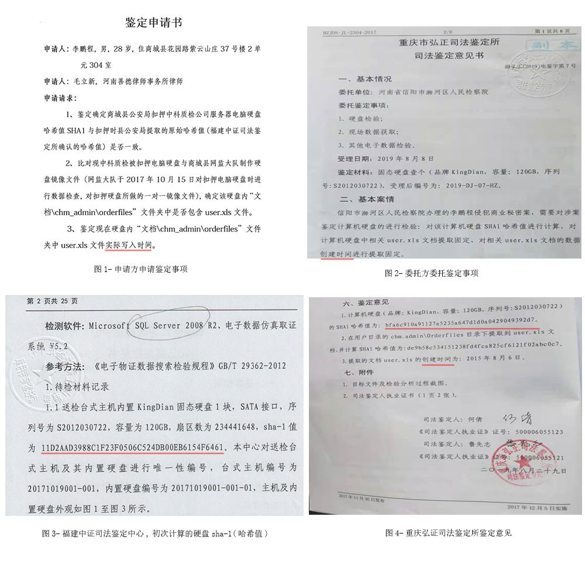
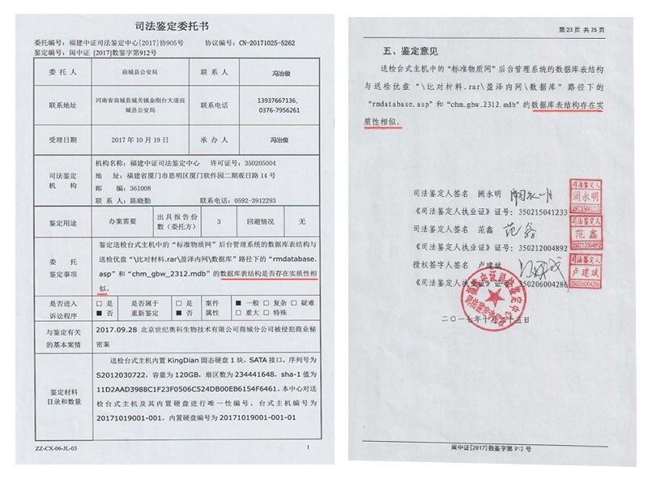
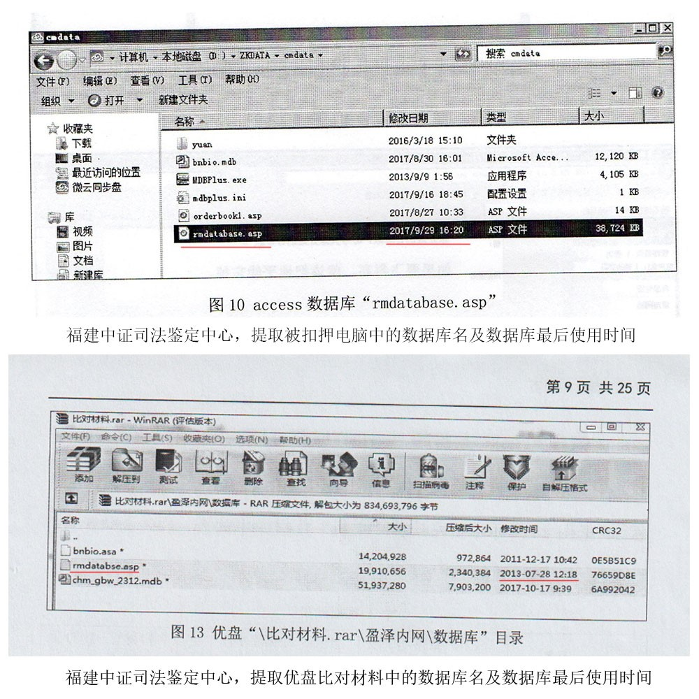

信阳知识产权案件举报材料
我是中科质检公司法人代表，案件当事人李鹏程，身份证号码：411524199209154016。联系电话：13939768081。
因北京世纪奥科公司法人代表肖启炎，控告我与李童因商业秘密引起法律诉讼。
2017年9月30日，商城县公安局立案侦查，将我关押在商城县看守所37天。2017年11月7日，商城县检察院作出了不批捕决定。商城县公安局给我办了取保候审。
2018年8月20日，时隔近一年，商城县公安局再次将案件移送到商城县检察院审查起诉。案件是因电子证据引发的新型知识产权案，商城县检察院将案件上报到信阳市检察院。由信阳市检察院指定浉河区检察院对此案进行审查起诉。其间因事实不清，证据不足，浉河区检察院先后两次将案件退到商城县公安局补充侦查。
因肖启炎是商城县人大常委身份，社会背景关系网对司法系统的运作能力很强。商城县公安局第三次，将案件移送信阳市浉河区检察院审查起诉。应通过纂改硬盘数据伪造证据，补充了一份，严重违反电子数据司法鉴定规程的司法鉴定意见书（北京国创鼎诚司法鉴定意见书）。
被扣押硬盘在案发时2017年10月，在福建中证司法鉴定中心，做了第一次司法鉴定。司法鉴定委托书明确标识了被扣押硬盘的哈希值SHA-1，sha-1值为" 11D2AAD3988C1F23F0506C524DB00EB6154F6461 "（ 完整性校验码）而补充的第二次北京国创鼎诚司法鉴定意见书中，故意规避了硬盘的完整性校验值哈希值SHA-1。哈希值SHA-1是硬盘的身份凭据，是保证硬盘原始性和完整性的唯一凭据，一份没有硬盘身份信息，且不能保证硬盘原始性，完整性，唯一性的鉴定书。如何作为定案的根据？，一份没有硬盘身份信息，且不能保证硬盘原始性，完整性，唯一性的鉴定书。如何作为定案的根据？
第一次福建中证司法鉴定中心的鉴定，委托方商城县公安局委托鉴定事项是，“数据库表结构是否存在实质性相似”。第二次北京国创鼎诚司法鉴定中，指被扣押电脑硬盘发现一个user.xls文件，且user.xls表格内包含“盈泽客户资料”共计9000多条客户资料。很明显这就是定案的关键性证据。为什么会距第一次鉴定一年多后，案件公诉期间退补两次后，2019年3月补充第二次鉴定时，突然莫名其妙的多出一个user.xls文件呢？
另外商城县公安局在2017年案发时扣押电脑时，对扣押电脑硬盘做了电子数据检查，从电子数据检查截图中可以看到，当时网监大队检查了文档路径下的文件夹，提到文件夹中的1348个word文档。检查中并未提到这个user.xls文件。第二次北京国创鼎诚司法鉴定所，鉴定的user.xls文件与1348个word文件，所处在同一文件夹。并且按照相关规定，当时网监大队对硬盘做了.dd镜像（硬盘的原始备份）。
我在浉河区检察院，向主办检察官邹燕提出，让商城县公安局提供硬盘原始镜像备份，如果备份镜像中显示硬盘中确实有这个user.xls文件，我立即认罪伏法。如果没有这个user.xls文件，说明有人伪造证据。当时主办检察官打电话，跟商城县网监大队王聪，确认此镜像文件，网监大队回复备份已经删除了。理由是办案电脑硬盘存满了，清理掉了。网监大队为什么不敢拿出此镜像文件进行确认呢？很明显这个文件是电脑被扣押后人为添加进去的。判断是否是扣押后人为添加进去的，只需要一个哈希值校验鉴定就能说明问题。或者对文件本身进行鉴定，确认user.xls.文件是案发前就有，还是案发后被人为添加进去的。因为，第二次司法鉴定，故意规避了硬盘的哈希值。违反了国家司法鉴定规程。所以我和律师提出哈希验校验鉴定，是客观合理的意见。既能加强检察机关对证据审查的严谨性，也能证明硬盘是否在被扣押后有人为篡改。检察机关为什么不去做这个鉴定，而是将案件直接起诉到法院呢？
2019年4月8日，商城县公安局第三次将案件移送至浉河区检察院后。律师在2019年4月16日，找到案件主办检察官邹燕，沟通了第二次司法鉴定存在重大瑕疵，严重违反了国家司法鉴定规程的严格要求，《电子数据司法鉴定通用实施规范》SF/ZJD0400001-2014、《电子物证数据恢复检验规程》GB/T 29360-2012。并指出了违反哪几项国家规定，还提交了书面材料和硬盘哈希值鉴定申请。然而案件承办人邹燕，在刑事案件中至关重要的证据存在重大瑕疵的情况下，依然将案件起诉到了法院。
2019年5月案件在浉河区法院提起公诉，在我和律师的强烈要求下。2019年8月法院同意了我们对扣押硬盘做哈希值鉴定和文件实际写入时间鉴定。第三次司法鉴定，是由重庆弘正司法鉴定所鉴定。司法鉴定意见：1、计算机硬盘的SHA1哈希值为： bfa6c910a91127a5235a647d1d0a0429049392d7。2、提取的文档user.xsl的创建时间为：2015年8月6日。我们在司法鉴定申请书中，申请鉴定user.xsl文件的实际写入时间。但从重庆弘正司法鉴定所，司法鉴定意见书中看到。委托事项是：对计算机中相关user.xsl文档提取固定、对相关user.xsl文档的数据创建时间进行提取固定。这是在跟我们混淆概念，文档的创建时间，不等同与文档的实际写入时间。
从鉴定意见中可以看到，硬盘的哈希值发生了变化。说明在第一次福建中证司法鉴定中心鉴定之后，有人动过计算机硬盘数据。硬盘电子数据的原始性，完整性，唯一性已经无法保证。如果公安机关任然拒不提供，案发时制作的硬盘原始备份。那么足以说明硬盘数据被人为纂改过，所以公安机关拒不提供原始备份，让事实真相无从查证。
为了保证案件质量还原事实真相，在此请求将被扣押电脑交由法律监督部门，要求公安机关提供原始备份，确认硬盘扣押当时是否存在user.xsl文件。如果原始备份中却有user.xsl文件，我认罪伏法。如果没有，说明有人伪造证据。请求法律监督部门明察秋毫，查清事实真相。依法打击犯罪。
关于浉河区检察院对新型领域知识产权案件难以把关造成不作为情况的反映
案件背景：
原告肖启炎 男 河南省信阳市商城县汪刚村人，现任商城县人大常委。
案发过程：
2017年9月29日17：00，原告肖启炎与其儿子肖航等人带领商城县公安局经侦大队雷前海队长冯治俊等公安机关人员来到我的公司进行强制搜查。北京中科质检生物技术有限公司商城分公司，地址：河南省商城县花园路清华怡居园。说我们侵犯了肖启炎公司的商业秘密。肖启炎与其儿子肖航指导经侦大队人员搜查扣押我公司多台电脑。扣押电脑是肖启炎指定公安人员进行扣押的。原告肖启炎还叫来他公司所有员工近70人堵在中科质检公司门口。当时逼我交出我公司内网服务器，我和我的员工质问到肖启炎你凭什么你是公安人员吗？没有法律了吗？他回答到我就是公安我就是法律。肖启炎在搜查过程中还说到李鹏程你知道我为什么现在才搞你吗？我盯你两年了，我是等猪喂肥了再杀。以上肖启炎说过的话当时公安人员有执法记录仪可以证明，我公司员工也可以作证。
当晚2017年9月29日21：00，经侦大队雷前海将我和我的合伙人李童带到商城县公安局经侦大队进行询问。询问过程中肖启炎两次出面与公安人员共同对我进行询问直到到凌晨一两点才停止询问。
2017年9月30日8：30，又对我询问一个小时然后雷前海队长9点多打电话叫来了肖启炎说让我们谈和解。肖启炎与我见面时说李鹏程事情搞到现在这个地步你认为你公司的员工还敢跟着你干吗？我回答到我自己带出来的员工我心里有数，没有人会离开我离开公司。然后肖启炎提出和解条件是让我交出公司及公司网站从此不再经营这个行业。我坚决不同意，之后雷队长让我回去了。
回到公司后员工告诉我9月29日搜查结束后当晚肖启炎的儿子肖航 找来开锁公司的人撬我公司的门锁。说要找出我们的内网服务器被我公司员工制止。我公司员工报案后，治安警察来了打了个电话给雷前海问如何处理，雷前海说没撬开没事让他们都走。（雷前海接这个电话的时候我与他同在一个办公室正在询问我）后来警察将开锁公司的人和我公司人员带到了派出所做了笔录。（公司员工有撬锁的视频证据）2017年9月30，日十九大即将召开，肖启炎指使公司几十名员工拉横幅在我公司周围要求公安人员对我们进行立案侦查。9月30日晚还给我公司所有员工发来恐吓短信。以上事实都有视频照片手机截屏等证据。
2017年10月1日9：00，商城县公安局经侦大队对将我和我的合伙人李童拘传至办案中心，并告知我们已经被立案侦查。经过一天的讯问后在没有做出任何鉴定和证据的情况下将我们刑拘在商城县看守所。
2017年10月30，日经侦带队来到商城县看守所让我在第一次福建中证司法鉴定通知书上签字。而后2017年11月7日商城县人民检察院做出了不予批准逮捕采取取保候审的决定。我和我的合伙人李童在2017年11月7日当晚23：00左右被商城县看守所释放，并办理了取保候审手续。
2018年8月14，日距离案发近一年时间，商城县公安局经侦大队让我来到公安局。让我在移送起诉告知书上签字。告知书上写到我局认为犯罪嫌疑人李鹏程侵犯商业秘密罪的犯罪事实清楚，证据确凿、充分。现已移送审查起诉。 特此告知。
2018年8月20，日案件被移送到商城县人民检察院。2018年9月11日，商城县人民检察院传唤了我和我的合伙人李童来到商城县人民检察院公诉科。公诉科承办人杨丽对我和李童进行讯问后让我们回去了。2018年9月中旬，我的代理律师河南财经政法大学教授毛立新找到商城县检察院案件承办人杨丽得知案件将会被移送到信阳市浉河区人民检察院进行审查起诉。
2018年10月11日，商城县检察院公诉科案件承办人杨丽通知我和李童到信阳浉河区检察院，办理案件移送。移送当天我和李童没有见到浉河区检察院案件承办人就回了商城县。之后2018年10月20日浉河区检察院承办人邹燕对我和李童进行了一次讯问。
2018年12月18日，商城县公安局，通知我和李童来到商城县公安局。告知案件被退回补充侦查，对我们进行了讯问。说马上会再次移送至信阳市浉河区检察院。至于第二次移送浉河区检察院的时间，我没有接到通知。第二次退补和第二次鉴定是什么时间我都没有得到通知。
2019年4月4日， 接到商城县公安局经侦大队的电话。让我和李童过去。让我们在第二次鉴定意见通知书上签字。当时没有让我们仔细看司法鉴定意见书。就给我们一张通知书和司法鉴定意见书的鉴定意见最后两页。
司法鉴定细节：
北京国创鼎城司法鉴定中心的鉴定意见书作为证据。我和我的律师看到鉴定意见书后，发现鉴定意见书中提到电脑硬盘中发现了一个user.xls文件。我确知电脑中没有这个文件。第一、我在2016年3月26日对硬盘做了全盘镜像文件，打开查看里面确实没有这个文件。第二、商城县公安局在扣押电脑后，对硬盘做了电子数据检查，截图中可以看到，当时检查此文件夹中的word文件，并没有提到这个包含盈泽客户资料的user.xls文件。我和律师仔细看完鉴定意见书后，发现鉴定意见书存在诸多问题，严重违反了《中华人民共和国司法部司法鉴定管理局关于电子数据司法鉴定通用实施规范SF/ZJD0400001-2014》，《GB/T29360-2012电子物证数据恢复检验规程》首先、意见书中没有看到委托书，硬盘照片，硬盘哈希值，鉴定参考方法，只写了一个SN号。这无法保证硬盘的原始性，唯一性，同一性。 我的律师在2019年4月16日提交了硬盘鉴定申请书，并向案件承办人邹燕解释了第二次鉴定意见书存在重大瑕疵，不能直接作为定案证据。建议检察官对硬盘哈希值进行确认，是否有人为纂改的行为，在做定夺。承办人邹燕当时是答应做鉴定的。
2019年5月20日，承办人邹燕通知我的律师要将案件起诉得到法院。我得知消息后，当天下午15:23来到浉河区检察院，找到主办检察官邹燕，提交了第二次鉴定意见书中违反了中华人民共和国和司法部发布实施鉴定规程的那些条规定，并与邹燕交流了意见（附件包含全部交流内容）。她当时的回复是案件时间期限到了，先起诉到了法院再说。
以上我讲的都属事实，如不属实我愿意承担一切法律责任。
当事人李鹏程向主办检察官邹燕提出的意见
2019年5月20日下午15:25，我在浉河区检察院二楼承办人邹燕办公室内。我跟承办人邹燕陈诉了我公司的运营方式，解释道我们公司从来不做主动营销工作。客户都是通过我公司在百度360搜狗等搜索上投放的广告主动与我们取得联系，然后建立合作关系的。我还带了120份客户提供的证明材料和公司案发前010电话的通话记录作为证据交给她了。邹燕说明白我解释的内容，怎么没有早点送过来。我说我以为检方会采纳我和律师4月16日提交的《硬盘鉴定申请书》鉴定结果一出来，事情就真相大白了。所以我就没着急送过来。
然后我恳请邹燕对哈希值要深入了解，我说一块硬盘的哈希值是否发生改变，它能够证明硬盘在扣押后有没有被人为操作过。我还说到最重要的是哈希值还代表着硬盘的身份，第二次鉴定既没有对硬盘进行拍照也没有标识硬盘的哈希值。我们怎么认定第二次鉴定意见书的结论是出自于被扣押硬盘呢？我说我愿意承担一切费用来鉴定被扣押硬盘的哈希值。
她回答到案件的最后时限到了，他们能用的时间已经用完了。5月23号就到时间了，来不及在做鉴定了。我说我提出鉴定哈希值并不是无理的要求，因为第二次鉴定确实没有按照国家对电子数据司法鉴定的规定来做。违反了哪些规定我也以书面的形式提交给你了。她说案件已经进入起诉环节不能做这个鉴定了。
然后我根据律师的意见，向邹燕提出商城县公安局网监大队在2017年10月扣押电脑时，在做电子数据检查时，对电脑硬盘做了硬盘镜像文件（原始备份），现在检方可以要求网监大队拿出这个镜像文件，打开看看镜像备份里是否真的有第二次鉴定意见书中提到的user.xsl文件。如果有我认罪伏法。邹燕当面打电话问了公安局网监大队王聪，王聪说当时是做了这个镜像文件。邹燕问他这个镜像文件还在不在。网监大队王聪回答不在了删除了，理由是电脑硬盘被存满了清理掉了。
我再次提出硬盘第一次鉴定是在福建中证司法鉴定中心做的，那里应该也有这个硬盘在2017年10月的镜像文件（原始备份）。当时她观点跟我是一致的，说刑事案件的鉴定文件司法鉴定机构应该会保证的。然后有当面打给福建中证司法鉴定中心，当时未得到回复。
最后邹燕给我的意见是，既然你坚持认为电脑里没有这个文件就不要怕，案件到法院后对鉴定的意义可以向人民法院提出来，到时候也能说清楚问题。我回答我不怕，有就是有，没有就是没有。事实摆在那里，我相信法律会证实这一切的真相。无论案件怎样进行我会坚持到底。随后我就离开了浉河区检察院。
李鹏程侵犯商业秘密案，补充意见
意见一、
因第二次，北京国创鼎诚司法鉴定所，违反电子数据司法鉴定规程。没有确认电脑及硬盘的封存状态，没有比对电子数据完整性校验值（哈希值）。因此被告方申请鉴定：1.硬盘电子数据完整性校验值（哈希值）2.比对被扣押电脑硬盘和商城县公安局原始性备份（.dd硬盘镜像）3.鉴定被扣押硬盘内user.xls文档的实际写入时间。
下图.1是被告方申请鉴定事项。图.2检察机关委托鉴定事项。图3福建中证司法鉴定中心计算的硬盘sha-1(哈希值)。图4重庆弘正司法鉴定所出具的鉴定意见：硬盘sha-1（哈希值）及user.xls文档的创建时间。
申请方申请事项，第三条：鉴定现在硬盘内“文档\chm_admin\orderfiles”文件夹中user.xls文件实际写入时间。
委托单位浉河区人民检察院，委托鉴定的是：对计算机硬盘中相关user.xls文档提取固定，对相关user.xls文档的数据创建时间进行提取固定。
从计算机操作专业知识方面来判断，文档实际写入时间是否等同于文档创建时间 ？从图3和图4中看到福建中证司法所鉴定中心，计算的哈希值，与重庆弘正司法鉴定所，计算的哈希值不一致。无法保证硬盘数据完整性，委托方委托对user.xls文档提取固定，是否能够保证文档的真实性？
意见二、
从第一次福建中证司法鉴定中心，出具的司法鉴定意见书和委托书中的鉴定事项可以看出，只是针对（数据库表结构是否存在实质性相似）进行鉴定。这个数据库表结构是否属于商业秘密，是否具备商业价值，是否具有实用性，是否给该权利人带来经济利益。带来的经济利益是多少。
既然指控的是侵犯商业秘密罪。却没有对数据库中存储的内容进行鉴定，原告提供的检材数据库中是否包含商业秘密？为何不对其数据库中的经营信息，客户信息进行比对鉴定？
意见三、
从福建中证司法鉴定中心，出具的意见书截图中可以看到，被告电脑中的数据库修改时间是，2017年9月29日 16：20，正是案发时公安局，扣押中科质检公司电脑时，电脑关机停止使用的时间。
而原告肖启炎提供的数据库，修改时间为2013年7月28日12：18。说明该数据库的最后使用时间是2013年7月18日。
这个时间只能说明，原告提供的数据库是2013年前，遗弃在笔记本中的数据库，并不是原告所指控的正在使用的数据库。
